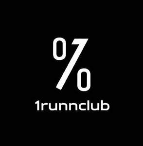

Trade Mark Journal No.2026/006 6 February 2026
UK00004326878 20 January 2026 (25,35,41)

- Class 25
- Clothing; Knitwear [clothing]; Jackets [clothing]; Ready-to-wear clothing; Woolen clothing; Furs [clothing]; Garments for protecting clothing; Layettes [clothing]; Clothing layettes; Linen clothing; Headbands [clothing]; Headbands for clothing; Gloves [clothing]; Gloves as clothing; Clothes; Aprons [clothing]; Maternity clothing; Kerchiefs [clothing]; Jerseys [clothing]; Denims [clothing]; Shorts [clothing]; Cashmere clothing; Capes (clothing); Oilskins [clothing]; Gabardines [clothing]; Silk clothing; Leather clothing; Clothing of leather; Leather (Clothing of -); Collars [clothing]; Parts of clothing, footwear and headgear; Knitted clothing; Veils [clothing]; Windproof clothing; Hoods [clothing]; Corsets [clothing, foundation garments]; Embroidered clothing; Wristbands [clothing]; Belts [clothing]; Belts for clothing; Bandeaux [clothing]; Rainproof clothing; Waterproof clothing; Casual clothing; Visors [clothing]; Jackets being sports clothing; Jackets (Stuff -) [clothing]; Stuff jackets [clothing]; Bottoms [clothing]; Playsuits [clothing]; Clothing for leisure wear; Ready-made clothing; Latex clothing; Trunks being clothing; Woven clothing; Infant clothing; Drawers [clothing]; Drawers as clothing; Leisure clothing; Clothing for sports; Sports clothing; Ties [clothing]; Athletic clothing; Clothing for children; Muffs [clothing]; Bodies [clothing]; Clothing for babies; Tops [clothing]; Clothing for infants; Clothing for cycling; Weatherproof clothing; Pockets for clothing; Fabric belts [clothing]; Water-resistant clothing; Handwarmers [clothing]; Triathlon clothing; Clothing for skiing; Beach clothing; Thermal clothing; Cowls [clothing]; Chaps (clothing); Men's clothing; Fishing clothing; Mitts [clothing]; Braces for clothing; Dance clothing; Plush clothing.
- Class 35
- Advice relating to the business management of fitness clubs; Advice relating to the business operation of fitness clubs; Retail services connected with the sale of clothing and clothing accessories; Business management of wholesale and retail outlets; Business management of retail outlets; Retail store services in the field of clothing; Administration of the business affairs of retail stores; Retail services in relation to homeware; Online retail store services in relation to clothing; Online retail store services relating to clothing; Retail services in relation to confectionery; Unmanned retail store services relating to food; Retail services connected with the sale of furniture; Unmanned retail store services relating to drink; Retail services in relation to footwear; Retail services in relation to beer; Retail services in relation to jewellery; Retail services in relation to furnishings; Retail services in relation to furniture; Retail services in relation to saddlery; Retail services in relation to clothing; Shop retail services connected with carpets; Retail services in relation to tobacco; Retail services in relation to bakery products; Retail services in relation to seafood; Retail services in relation to smartphones; Retail services in relation to smartwatches; Retail services relating to jewelry; Retail services in relation to downloadable virtual footwear; Retail services in relation to chocolate; Retail services relating to furniture; Retail services in relation to lighting; Retail services in relation to coffee; Retail services in relation to toys; Online retail services relating to jewelry; Online retail services relating to clothing; Management of a retail enterprise for others; Retail services relating to bakery products; Online retail services for downloadable virtual clothing; Retail services in relation to cocoa; Retail services connected with stationery; Retail services in relation to yarns; Online retail services relating to cosmetics; Retail services relating to candy; Retail services relating to food; Retail services in relation to horticulture products; Retail services relating to clothing; Retail services in relation to cookware; Retail services in relation to fashion accessories; Retail services in relation to pet products; Retail services in relation to bags; Retail services relating to delicatessen products; Retail services in relation to fuels; Retail services in relation to games; Retail services in relation to desserts; Business management of wholesale outlets; Retail services in relation to metal hardware; Retail services in relation to meats; Retail services in relation to headgear; Retail services in relation to computer hardware; Retail services in relation to downloadable virtual clothing; Online retail services in relation to downloadable virtual footwear; Online retail services relating to toys; Retail services in relation to lubricants; Retail services in relation to fabrics; Retail services in relation to vehicles; Retail services in relation to tableware; Retail services in relation to gardening products; Online retail store services relating to cosmetic and beauty products; Retail services in relation to dairy products; Retail services in relation to downloadable virtual headwear; Retail services in relation to foodstuffs; Online retail services relating to handbags; Retail services in relation to clothing accessories; Retail services relating to horticultural products; Retail services in relation to pushchairs; Retail services in relation to sorbets; Retail services in relation to heaters; Mail order retail services for cosmetics; Online retail services in relation to downloadable virtual clothing; Retail services in relation to safes; Mail order retail services for clothing; Retail services in relation to wearable computers; Retail services in relation to bicycle accessories; Retail services for computer software; Retail services in relation to downloadable virtual handbags; Retail services in relation to car accessories; Retail services in relation to floor coverings; Retail services in relation to chemicals for use in horticulture; Online retail services in relation to downloadable virtual headwear; Retail services in relation to horticulture equipment; Retail services in relation to stationery supplies; Retail services relating to home textiles; Retail services in relation to paints; Retail services in relation to toiletries; Retail services relating to batteries; Retail services in relation to cutlery; Retail services relating to fruit; Retail services in relation to physical therapy equipment; Online retail services in relation to downloadable virtual handbags; Retail services in relation to non-alcoholic beverages; Retail services relating to automobile accessories; Retail shop window display arrangement services; Retail services in relation to teas; Retail services in relation to luggage; Retail services in relation to umbrellas; Retail services in relation to bicycles; Retail services in relation to domestic electronic equipment; Online retail services relating to luggage; Online retail services for downloadable digital music; Retail services in relation to frozen yogurts; Retail services relating to horticultural equipment; Retail services relating to accumulators; Mail order retail services for clothing accessories; Retail services in relation to educational supplies; Retail services in relation to weapons; Retail services in relation to agricultural equipment; Retail services in relation to chemicals for use in agriculture; Retail services relating to furs; Retail services in relation to articles for use with tobacco; Retail services in relation to sporting equipment; Retail services relating to flowers; Retail services in relation to hair products; Retail services in relation to domestic electrical equipment; Retail services in relation to sanitary installations; Retail services in relation to building materials; Retail services in relation to pharmaceutical preparations; Retail services in relation to computer software; Retail services in relation to festive decorations; Retail services relating to alcoholic beverages; Retail services in relation to construction equipment; Retail services in relation to freezing equipment; Retail services in relation to chemicals for use in forestry; Retail services via catalogues related to beer; Retail services connected with the sale of subscription boxes containing food; Retail services in relation to mobile phones; Retail services in relation to kitchen appliances; Retail services relating to sporting goods.
- Class 41
- Health and fitness training; Sports and fitness; Exercise and fitness classes; Health and fitness club services; Health club [fitness] services; Exercise [fitness] training services; Fitness and exercise training services; Fitness and exercise instruction; Health club services [health and fitness training]; Fitness club services; Physical fitness consultation; Physical fitness centres; Physical fitness instruction; Physical fitness training services; Sports and fitness services; Fitness training services; Tuition in physical fitness; Physical fitness tuition; Personal fitness training services; Personal trainer services [fitness training]; Providing fitness and exercise facilities; Physical fitness centre services; Exercise [fitness] advisory services; Golf fitness instruction; Conducting physical fitness conditioning classes; Physical fitness education services; Health and wellness training; Consultancy relating to physical fitness training; Aerial fitness instruction; Physical fitness centres (Operation of -); Health club services [exercise]; Training services relating to fitness; Conducting fitness classes; Physical fitness assessment services for training purposes; Provision of health club [physical exercise] facilities; Education services relating to physical fitness; Educational services relating to physical fitness; Provision of educational health and fitness information; Instruction courses relating to physical fitness; Physical fitness instruction for adults and children; Conducting training sessions on physical fitness online; Aerobics training services; Training in yoga; Gym activity classes; Health club services; Aerobic and dance facilities; Sports training; Training in sports; Physical health education; Rental of sports or exercise equipment; Aerobics competitions; Providing health club and gymnasium services; Provision of educational services relating to fitness; Training related to nutrition; Exercise classes; Supervision of physical exercise; Gymnasium services relating to weight training; Providing of training in the field of health care and nutrition; Entertainment in the nature of weight lifting competitions; Physical training services; Strength and conditioning training; Personal coaching [training]; Life coaching (training); Training services relating to health and safety; Providing obstacle course training gym facilities; Recreation and training services; Training services relating to occupational health; Education and training in the field of occupational health and safety; Providing instruction and equipment in the field of physical exercise; Entertainment services in the nature of a wrestling club; Education and training services in the field of occupational health and safety; Sports club services; Training of sports players; Personal trainer services.
Thomas Magnitis